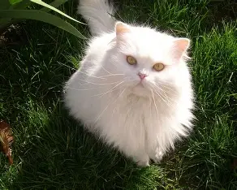

Why you should love cats!
Low Maintenance:Cats are generally low-maintenance pets. They groom themselves, use litter boxes instinctively, and do not require daily walks like dogs. This makes them ideal for busy individuals or those living in small spaces

Health Benefits:Spending time with cats can have positive effects on mental health. Studies show that petting a cat can lower blood pressure and reduce stress levels. Their presence can provide comfort and emotional support, making them great companions for those dealing with anxiety or depression.